|
|
|
Swimming
crabs
Family Portunidae
updated
Dec 2019
if you
learn only 3 things about them ...
 Unlike other crabs, they swim very well! Unlike other crabs, they swim very well!
They move quickly to hunt fast-moving prey like fish.
They
can give a nasty pinch. Leave them alone! |
|
Where
seen? Swimming crabs are commonly seen on all our shores.
They particularly active at night, but are often also out and about
during the day. Besides the large adults, small juvenile swimming
crabs are also hidden among the seagrass and seaweed, and other nooks
and crannies. These active crabs come in all kinds of colours. Some
can react fiercely by waving spiny pincers, and may even give you
a nip. So don't touch these crabs.
Features: Body width 5-15cm. Swimming
crabs are among the few crabs that are swift and agile swimmers. They
usually swim sideways, but can also swim backwards and sometimes forwards.
They swim with their last pair of legs which are paddle-shaped. These
rotate like propeller blades when they swim. However, these crabs
are essentially bottom-dwellers and don't swim about all the time.
They often hide among the vegetation and slip under rocks and into
other narrow crevices.
Swimming crabs have a streamlined shape for racing through the water.
They have long pincers armed with sharp spines to snag fish and other
fast moving prey. Often, one pincer is slightly larger than the other.
Here's more on how to tell apart the swimming
crabs commonly encountered on our shores.
Fierce Crabs: If disturbed, swimming
crabs often fearlessly wave their pincers menacingly. This is not
an idle threat. If you come too close, this crab might just give a
good nip that draws blood!
|
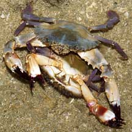
Mating swimming crabs
Pulau Sekudu, May 04 |
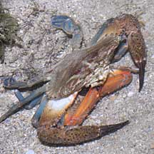
Brown crab mating with a red one.
Both are Red swimming crabs.
Terumbu Pempang Tengah, May 11 |
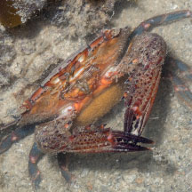
With eggs on the belly.
Terumbu Bemban, Aug 25
Photo shared by Marcus Ng on facebook. |
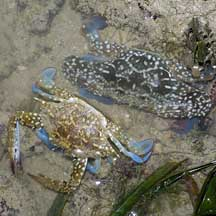
Flower crab (top)
next to
its moulted shell (bottom)
Sentosa, Jul 04 |
|
|
What do they eat? They eat fish,
worms, other crustaceans (including other crabs), clams and snails.
They may also nibble on seaweed.
Swimming Babies: Like other crabs,
swimming crabs often mate when the female is moulting.
Monstrous crabs: In Greek Mythology,
Scylla is a female sea monster, who lives along a narrow channel,
opposite the dwelling place of Charybdis, another female sea monster,
sometimes a whirlpool. Thus arose the idiom: "between Scylla
and Charybdis" meaning a precarious position where avoiding of
one danger exposes oneself to another danger.
Human
uses: Swimming crabs are edible and enjoyed by people everywhere.
In our part of the world, from Asia to Australia., the Flower
crab (Portunus pelagicus) is one of the commonly eaten
members of this family. |
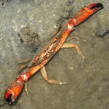
Threat posture.
Pulau Semakau, Nov 09 |

Eating a heart urchin.
Terumbu Pempang Tengah, May 11 |
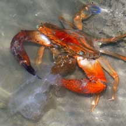
Eating a jellyfish
Pulau Semakau, Dec 04 |
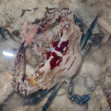
Eating a bristleworm
Pulau Semakau (West), Jul 25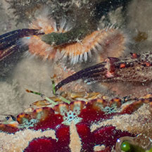
Photo shared by Jayden Kang on facebok. |
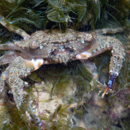
Caught an amphipod?
Cyrene, Feb 26 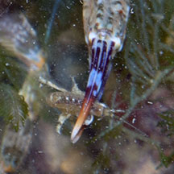
Photo by Yan Le Su on facebook. |
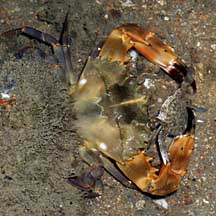
Eating another swimming crab.
Changi, Aug 08 |
Family
Portunidae recorded for Singapore
from Wee Y.C. and Peter K. L. Ng. 1994. A First Look at Biodiversity
in Singapore
in red are those listed among the threatened
animals of Singapore from Davison, G.W. H. and P. K. L. Ng
and Ho Hua Chew, 2008. The Singapore Red Data Book: Threatened
plants and animals of Singapore.
+from The Biodiversity of Singapore, Lee Kong Chian Natural History Museum.
*from Ng, Peter K. L. & N. Sivasothi, 1999. A Guide to the Mangroves
of Singapore II (Animal Diversity)
**from WORMS
| |
Charybdis affinis
Charybdis anisodon
Charybdis annulata (Banded-leg
swimming crab)
Charybdis anisodon (Orange-clawed swimming crab)
Charybdis brevispinosa
Charybdis callianassa
**Charybdis feriata=Charybdis feriatus
(Crucifix swimming crab)
Charybdis granulata
Charybdis hellerii (Purple-legged
swimming crab)
Charybdis natator (Ridged swimming
crab)
Charybdis orientalis
Charybdis ornatus
Charybdis truncata=**Charybdis (Goniohellenus) truncata
Charybdis variegata
+Lupocycloporus gracilimanus
Lupocyclus inaequalis
Lucocyclus rotundatus (NE:
Presumed Nationally Extinct)
Podophthalmus vigil (Sentinel swimming crab)
Portunus brocki=**Portunus (Xiphonectes) brockii
+Portunus (Portunus) convexus
Portunus gladiator=**Portunus (Monomia) gladiator
Portunus gracilimanus=**Portunus (Lupocycloporus) gracilimanus
Portunus hastatoides=**Portunus (Xiphonectes) hastatoides
+Portunus (Xiphonectes) cf. hastatoides
Portunus innominatus=**Portunus (Lupocycloporus) innominatus
Portunus pelagicus
(Flower crab) including tiny ones
Portunus rubromarginatus=**Portunus (Monomia) rubromarginatus
Portunus sanguinolentus (Blood-spotted swimming crab)
Portunus tenuipes=**Portunus (Xiphonectes) tenuipes
Portunus tweediei=**Portunus (Xiphonectes) tweediei
Scylla sp.
(mud crabs)
*Scylla olivacea (Orange mud crab)
*Scylla paramamosain (Green mud crab)
*Scylla tranquebarica (Purple mud crab)
Thalamita sp. (eyes-wide-apart swimming crabs)
Thalamita admete
+Thalamita chaptalii
Thalamita crenata (Powder blue-clawed
swimming crab)
Thalamita danae (Blue swimming crab)
+Thalamita cf. pelsarti
Thalamita prymna (Blue-spined
swimming crab)
Thalamita sima
Thalamita spinimana (Red swimming
crab)
Thalamita stimpsoni=**Thalamita danae
Thalamita sp. (Mottled swimming
crab) |
|
Links
- Swimming
crabs (Family Portunidae) Tan, Leo W. H. & Ng, Peter K. L.,
1988. A
Guide to Seashore Life. The Singapore Science Centre,
Singapore. 160 pp.
- Mud
Crabs (Scylla sp) and Flower
Crab (Portunus pelagicus) Ng, Peter K. L. & N. Sivasothi,
1999. A Guide
to the Mangroves of Singapore II (Animal Diversity). Singapore
Science Centre. 168 pp.
- Family Portunidae
in
the Crabs section by Peter K. L. Ng in the FAO Species Identification
Guide for Fishery Purposes: The Living Marine Resources of the
Western Central Pacific Volume
2: Cephalopods, crustaceans, holothurians and sharks on the
Food and Agriculture Organization of the United Nations (FAO)
website.
- Homing
in the swimming crab Thalamita crenata: a mechanism based on underwater
landmark memory. Cannicci S, Barelli C, Vannini M. on the
US National Center for Biotechnology Information website: their
study shows these crabs can learn and remember landmarks to safely
move about and that their ability is more flexible and complex
than other crabs, and comparable to that of honeybees.
References
- Hua Kai & Adib Adris. 30 October 2020. Sentinel swimming crab (Podophthalmus vigil) at Seringat-Kias. Singapore Biodiversity Records 2020: 175. The National University of Singapore.
- Ng, Peter
K. L. and Daniele Guinot and Peter J. F. Davie, 2008. Systema
Brachyurorum: Part 1. An annotated checklist of extant Brachyuran
crabs of the world. The Raffles Bulletin of Zoology. Supplement
No. 17, 31 Jan 2008. 286 pp.
- Wee, D. P.
C. & Ng, P. K. L., Swimming
crabs of the genera Charybdis De Haan, 1833, and Thalamita Latreille, 1829 (Crustacea: Decapoda: Brachyura: Portunidae)
from Peninsular Malaysia and Singapore. Pp. 1-128. Raffles Bulleting
of Zoology, Supplement Series No. 1 (31 December 1995)
- Lim, S.,
P. Ng, L. Tan, & W. Y. Chin, 1994. Rhythm of the Sea: The Life
and Times of Labrador Beach. Division of Biology, School of
Science, Nanyang Technological University & Department of Zoology,
the National University of Singapore. 160 pp.
- Davison,
G.W. H. and P. K. L. Ng and Ho Hua Chew, 2008. The Singapore
Red Data Book: Threatened plants and animals of Singapore.
Nature Society (Singapore). 285 pp.
- Wee Y.C.
and Peter K. L. Ng. 1994. A First Look at Biodiversity in Singapore.
National Council on the Environment. 163pp.
- Jones Diana
S. and Gary J. Morgan, 2002. A Field Guide to Crustaceans of
Australian Waters. Reed New Holland. 224 pp.
- Edward E.
Ruppert, Richard S. Fox, Robert D. Barnes. 2004.Invertebrate
Zoology
Brooks/Cole of Thomson Learning Inc., 7th Edition. pp. 963.
|
|
|